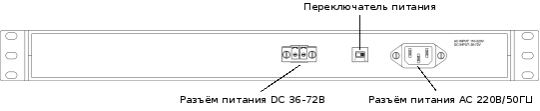

Маршрутизатор Sigrand SG-16R поставляется в настольном форм-факторе и в форм-факторе 19" для монтажа в коммуникационную стойку.
Вид передней панели маршрутизатора с одним и двумя каналами SHDSL, выполненного в форм-факторе 19", представлен ниже.

Порты Ethernet — RJ-45 порты для подключения по интерфейсу Ethernet.
Порты SHDSL — RJ-45 порты для подключения по интерфейсу SHDSL.
PGND — клемма для подключения заземления.
Консольный порт — RJ-45 порт для управления маршрутизатором.
Индикаторы Ethernet — каждому каналу соответствует два индикатора:
Верхний — FD/C :
Горит — полнодуплексный режим работы (Full duplex).
Не горит — полудуплексный режим работы (Half duplex).
Мигает — наличие коллизии в канале (Collision).
Нижний — LINK :
Горит — связь с удалённым устройством есть.
Не горит — связи с удалённым устройством нет.
Мигает — идёт обмен данными.
Индикаторы SHDSL
Верхний — ERR :
Не горит — нет сбойных пакетов.
Мигает — получен сбойный пакет.
Нижний — LINK :
Горит — связь с удалённым устройством есть.
Не горит — связи с удалённым устройством нет.
Мигает — процесс установки связи.
Выключатель питания — выключатель питания маршрутизатора.
Индикатор питания — горит, когда маршрутизатор включён.
Вид задней панели маршрутизатора с питанием 220В/50Гц в форм-факторе 19" показан ниже.
Разъём питания — для подключения к сети 220В/50Гц.
Вид задней панели маршрутизатора с питанием AC 220В/50Гц и DC 36-72В в форм-факторе 19" показан ниже.
Рисунок 3.5. Вид задней панели маршрутизатора с питанием AC 220В/50Гц и DC 36-72В в форм-факторе 19"
|  |
Разъём питания DC 36-72В — для подключения к источнику питания постоянного тока 36-72В.
Разъём питания AC 220В/50Гц — для подключения к сети 220В/50Гц.
Переключатель питания — переключатель питания DC 36-72B / AC 220В/50Гц.